AI-4016 · Assignment II
GigBid Field Guide
Everything you need to understand how GigBid was made and how it works, in the order you would explain it to someone else. Read it top to bottom once, then use the viva section as a checklist.
1. What the assignment asks for
You build GigBid: a web app where a team of AI agents finds freelance jobs, decides which are worth bidding on, drafts proposals where every claim is backed by the freelancer's own portfolio, and handles client replies. A human approves every proposal and message. The agents talk to the world only through standard tool servers (MCP), and they run inside a LangGraph workflow that can pause for approval and survive a restart.
How it is graded
| Part | Marks | What the grader looks for |
|---|---|---|
| A. MCP tool layer | 20 | Three clean servers with schemas, annotations, idempotency, auth and tests; a live Upwork adapter behind the same port; a tool-design study. |
| B. Advanced RAG | 20 | A baseline plus several variants, working claim verification, a calibrated judge, an ablation, results per persona, a defensible choice. |
| C. Multi-agent graphs | 25 | Parallel analysis, bounded critique loops, approvals that survive restarts, memory with explicit rules, an honest single-agent comparison, a cheap change request. |
| D. Web interface | 15 | Every required screen, live streaming, evidence on hover, approvals that resume the graph, browser tests, works on a phone. |
| E. Production | 10 | Worker and schedules, CI with evaluation gates, traces, injection defence measured, budgets, a stable public URL. |
| Portfolio and report | 10 | A README a stranger understands in two minutes, a published MCP server, a write-up with a real finding, a failure taxonomy. |
What you submit
- The public URL of the deployed app, which must stay live until grades are released, with reviewer login details in a private comment.
- The public GitHub repository, with the last commit before the deadline.
- The R&D report as a PDF, a 3-minute demo video, a link to the published Portfolio MCP server, and a technical write-up.
Rules that shape the design
- Open models first
- The deployed link must work on the
openprofile: open-weight models, run locally or through a hosted provider such as Groq. A paid profile is optional. - GigSim, not Upwork
- The grader runs hidden jobs on a simulator. A live Upwork mode is also required if you have an account, but it is never graded on outcomes and never submits without confirmation.
- No scraping
- Live access only through Upwork's official MCP server. No browser automation, no cookies.
- Config, not code
- Model names, thresholds, prompts and policy rules live in files under
agent/anddata/, so a rule change costs a few lines. - Hidden test
- After the deadline the instructor runs new jobs against every live URL. A site that is down loses the deployment marks.
2. The idea in one example
A freelancer on Upwork sees a post: "We need a RAG chatbot over PDFs. Budget $800." Doing this by hand means reading it, checking whether it is a scam, remembering which past projects prove you can do it, choosing a price, writing a proposal, and spending paid Connects to send it. GigBid does the first five steps and stops before the sixth.
Without GigBid
Hours scanning feeds. Connects burned on jobs you will not win or that pay below your rate. Generic proposals that clients ignore. Scam posts that ask for free work.
With GigBid
Each job is read, scored and explained. Scams are flagged. The draft links every claim to a case study from your own portfolio, and any claim without proof is removed. You approve, edit or reject. Nothing is sent otherwise.
Two design rules explain most of the code. First, a person approves every outbound action, so the workflow has a real pause point that survives a crash. Second, claims must come from evidence, so a retrieval step feeds the writer and a verifier checks the result.
3. The system map
Read this diagram from the top. The browser talks to a web API. The API starts work in the background and the agents run inside a graph. The graph never calls a marketplace directly: it calls tools, and the tools talk to the marketplace.
Postgres stores users, runs, saved searches, encrypted tokens and the workflow checkpoints that make approvals survive a restart. Redis is the job queue.
The agents and why each exists
| Agent | Job | Model |
|---|---|---|
| Scout | Searches the marketplace and removes duplicates before any model cost is spent. | none |
| Job Analyst | Turns the post into a typed spec: deliverables, skills, budget, hidden needs. | small |
| Risk Assessor | Checks scams and prompt-injection with fixed rules first, a small model second. | small |
| Fit Matcher | Builds the matrix of requirement to portfolio evidence. No model, so it cannot flatter you. | none |
| Pricing | Market stats, your rate floor, whether Connects are worth it. | none |
| Writer | The only creative step. Writes the proposal from the evidence. | strong (gpt-oss-120b) |
| Claim Verifier | Splits the draft into claims, grades each against evidence, removes unsupported ones. | small |
| Critic | Reviews the draft, from a different model family than the writer, at most two revisions. | mid (Qwen 27B) |
| Compliance Guard | Policy rules: no contact details, no guarantees, an AI-disclosure line. Re-checks your edits too. | none |
| Client Liaison | Classifies a client reply and drafts an answer or interview slots. | mid |
Analyst, Risk Assessor and Fit Matcher run in parallel, then a decision step chooses bid, watch or skip. The graphs below are drawn from the real code.
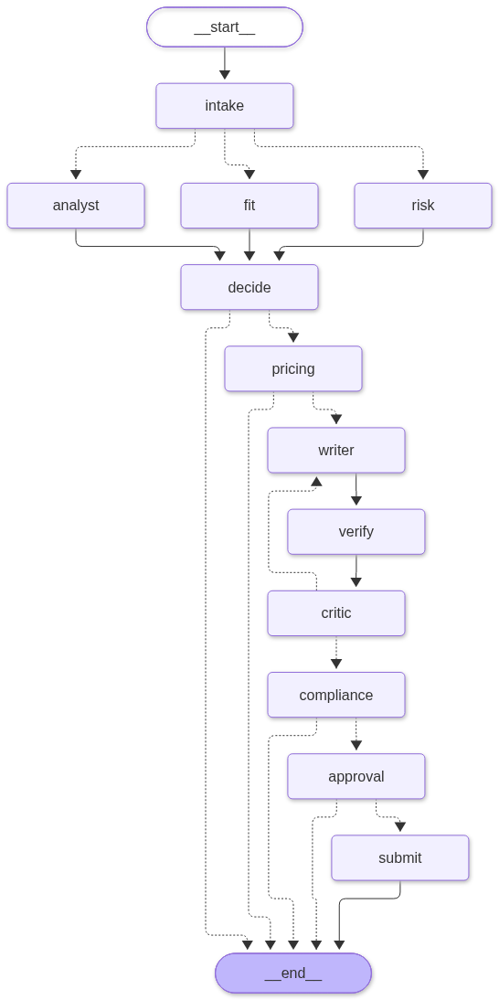
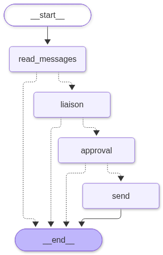
4. How it was built, step by step
The build followed a fixed order because each layer depends on the one before. Open a step to see what was made, why, and where to find it in the repository.
STEP 1 Data and the simulator (GigSim)
Problem. The instructor's simulator and datasets were not provided, so we had to build our own.
What was made. Real job posts and price statistics from two Kaggle datasets (licences checked: Apache 2.0 and ODC-By). Everything else is synthetic and labelled so: three freelancer personas (AI/ML, full-stack, data analyst) with CVs, case studies, past proposals and reviews, clients with hidden preferences, scam posts, prompt-injection posts, and development sets with gold labels. GigSim is a small web service that behaves like a marketplace: job search, Connects balance, proposals with idempotency keys, messages, rate limits, random server errors, and a simulated client whose reply depends on skill overlap, price and how generic the opening is.
Where. data/build/, data/personas/, gigsim/, docs/DATA_CARD.md. GigSim's files are hashed so CI can prove nobody edited them.
STEP 2 The tool layer: three MCP servers (Part A)
Idea. MCP (Model Context Protocol) is a standard way to expose tools to a model. Agents only ever call tools, never code directly.
Portfolio server (read-only): search evidence, get a case study, list skills, plus resources like portfolio://case/{id} and prompt templates. It can be run on its own with uvx.
Marketplace server (read and write): search jobs, get a job, client history, Connects balance, create a draft, submit. Writes need an idempotency key (repeating the call returns the first result), support dry-run (shows exactly what would be sent and what it costs), use bearer-token auth, a rate limiter under GigSim's limit, and an append-only audit log with personal data masked.
Workspace server: free calendar slots, tentative holds, email drafts that are never sent.
MarketplacePort is the one interface the rest of the system uses. Two adapters sit behind it: GigSim and the live Upwork adapter (OAuth 2.1 with encrypted tokens, tested only against a fake Upwork server).
Client discipline. Each agent gets only the tools it needs by name, with timeouts, bounded retries and a circuit breaker. If the marketplace server dies, the UI shows a banner, runs are parked and they resume on their own.
Where. mcp_servers/, agent/mcp_client.py, agent/marketplace_port.py, docs/TOOLS.md.
STEP 3 Advanced retrieval (RAG, Part B)
Idea. The writer must only claim what the portfolio proves, so a retrieval step finds the evidence. We built seven versions and measured them.
- V0 naive
- Embed the job post, find the nearest portfolio chunks. The baseline.
- V1 decompose
- Split the post into requirements and search each one.
- V2 hybrid
- Combine keyword search (BM25) with embeddings using reciprocal rank fusion.
- V3 rerank
- Hybrid, then a cross-encoder re-scores the top results.
- V4 outcome
- Boost evidence from proposals that won before.
- V5 full
- All of the above together.
- V8 corrective
- Grade the results; if they are weak, refuse instead of guessing.
Claim verification. The draft is split into atomic claims; each is graded supported, partly supported or unsupported against the evidence, and unsupported ones are removed before review.
Shipped choice. V3 (hybrid plus reranker). Details and numbers are in the results section.
Where. rag/, evals/runners/rag_eval.py, ablation.py, docs/adr/0002-rag-hypotheses.md (the hypotheses were written before the full runs).
STEP 4 The multi-agent graphs (Part C)
Typed hand-offs. Agents exchange validated data objects (JobSpec, RiskReport, FitReport, BidDecision, PriceQuote, ProposalDraft, Critique, ComplianceVerdict), not free text.
The bid graph. Intake, then three parallel analysts, then a decision, pricing, the writer, claim verification, the critic (maximum two revision loops), compliance, and then an interrupt that waits for a human. After approval the submit step uses idempotency keys derived from the graph's thread id, so a replay cannot send twice.
Durability. Workflow state is saved in Postgres after every step. Killing the server while a proposal waits, restarting it, and approving still produces exactly one submission and one Connects charge. This was proven with Docker.
Memory with rules. Style memory learns from your edits only when the same change appears at least three times across two jobs. Outcome memory needs at least five outcomes per category. Nothing else is stored, and the UI lets you list and delete what was learned.
Budgets and failures. Step and token limits send a run to "needs attention". Rate-limit and server errors are retried with backoff.
Where. agent/graphs/, agent/nodes/, agent/memory/, agent/handoffs.py.
STEP 5 API and background worker
FastAPI routers for login (with per-user data isolation), onboarding, jobs, approvals, proposals, messages, analytics and settings. A server-sent-events stream shows the graph's progress live. An Arq worker on Redis runs graphs and scheduled searches off the request path. Without Redis the API runs the same work in-process, which is handy for tests. One trace id follows a request from the browser through the API, the graph, the tool calls and the audit log.
Where. apps/api/, worker/.
STEP 6 The web interface (Part D)
React with TypeScript. The API client is generated from the API's OpenAPI file so types cannot drift. Screens: landing, sign-in, onboarding, inbox, job detail, proposal studio, pipeline, messages, agent runs, analytics, settings. Seven Playwright tests drive a real browser through onboarding, approving, editing, rejecting, the outage banner and the phone layout. The latest redesign is described in section 6.
Where. apps/web/.
STEP 7 Production engineering (Part E)
A Docker Compose file starts every service. GitHub Actions run lint, tests, a secret scan, a check that GigSim is unchanged, a check that prompts live in files, and a small evaluation that fails the build if quality drops. Tracing uses Phoenix. Logs mask emails and phone numbers. Declared budgets for latency and cost were measured. Not yet done: a public deployment, and the workflows have not run on GitHub.
Where. infra/, .github/workflows/, docs/DEPLOY.md, docs/RUNBOOK.md.
STEP 8 The signature extension: Portfolio builder (X3)
Point it at a GitHub repository and it drafts a case study, then verifies every claim against the code: skills must appear in the code or manifests, results must contain a number that exists in the repo, and cited files must exist. Only verified claims enter the portfolio. It has unit tests but has not been run on real repositories.
Where. agent/extensions/portfolio_builder.py, docs/EXTENSION.md.
STEP 9 The change request
The brief says the instructor will change a platform rule. We simulated it: an AI-disclosure requirement and a Connects surcharge on small jobs. Because rules live in config files and GigBid reads the platform's effective cost, absorbing it took 5 lines in 2 files plus a test.
Where. docs/CHANGE_REQUEST.md.
STEP 10 Evaluation and the report
Every number in the README and the 7-page report is generated from the JSON files in evals/results/. A CI check fails if the README tables go stale. The report states failures and gaps instead of hiding them.
Where. evals/, docs/report/report.pdf.
5. One job, start to finish
This is what happens when you press Scout now, with the status the interface shows at each point. The new status system exists so you never have to guess whether to wait.
- Scout queues the search In lineThe API puts the search on the queue and the inbox shows "Scout queued". Jobs appear as they are found.
- Three analysts run together Agents workingThe analyst, risk assessor and fit matcher read the post at the same time. The progress bar shows "Read the post" and a timer counts the seconds.
- Decide and priceA fixed rule decides bid, watch or skip. A low-ball budget below your floor is skipped. A scam is skipped with its reason. A skip ends the run Skipped.
- Write, verify, reviewThe writer drafts from the evidence. The verifier removes unsupported claims. The critic may send it back, at most twice. Compliance strips anything not allowed.
- The workflow pauses Ready for youThe state is saved. The inbox shows a "Review draft" button and the sidebar says "1 ready for you". This is the only point where you must act.
- You decide in the studioHover a claim to see its evidence. A dry-run preview shows exactly what will be sent and what Connects it costs. You approve, edit (checked again by compliance) or reject with a reason.
- Sending shows three steps"Recording your decision", "Submitting to the marketplace (once)", "Added to your pipeline". Do not close the tab until the third is ticked.
- Submitted SentThe card is in the pipeline: "Sent. No reply yet; the client may also ignore it".
- The client repliesWho is the client? In this demo, GigSim's simulated client. It sends one message right after you submit (ignore, reply, interview or hire, depending on skill overlap, price and how generic the opening is) and never answers follow-ups. The Liaison classifies that message and drafts an answer or proposes interview slots. You approve it, and the thread then says the conversation is complete. A live marketplace would continue.
6. The interface, screen by screen
The redesign uses the Tessel pixel-mosaic style you downloaded (MIT licence, credited in the repository). The landing page carries the animation. Inside the app the style stays calm: serif headings, thin lines, mono labels, one cobalt accent, plus small interactions such as hover lifts, count-up numbers and a live progress bar.
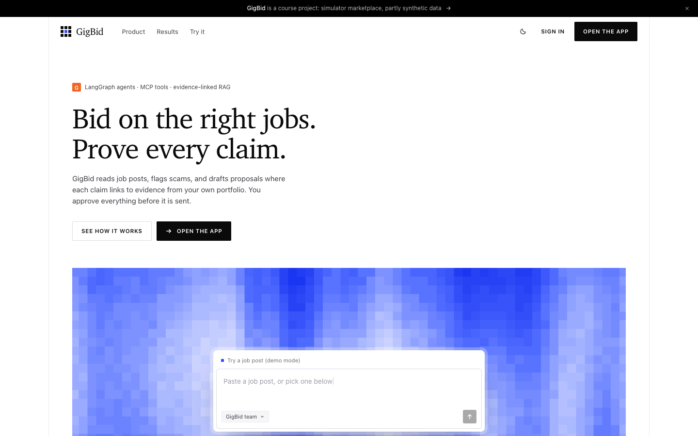
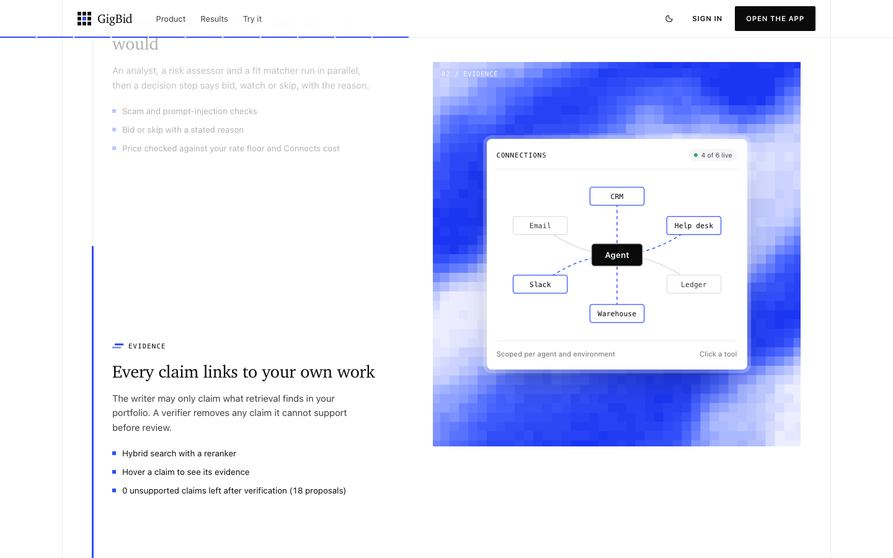
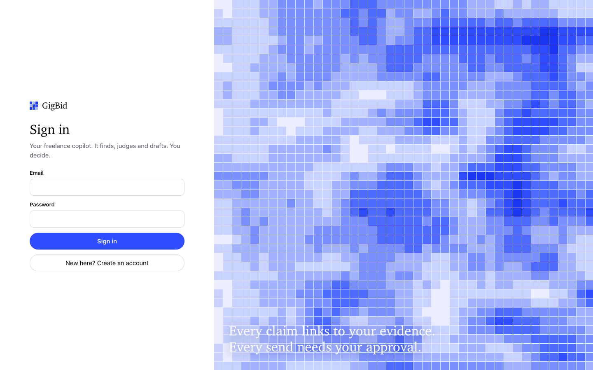
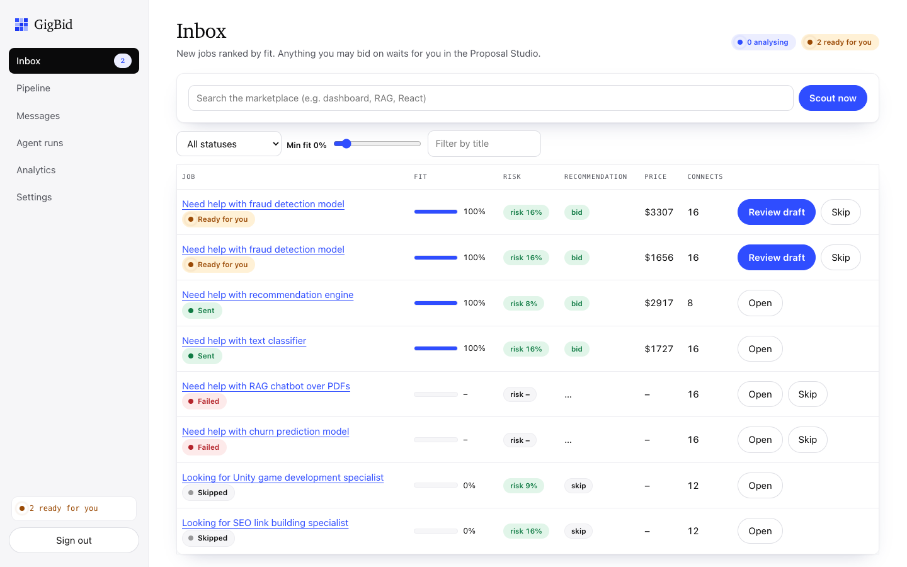
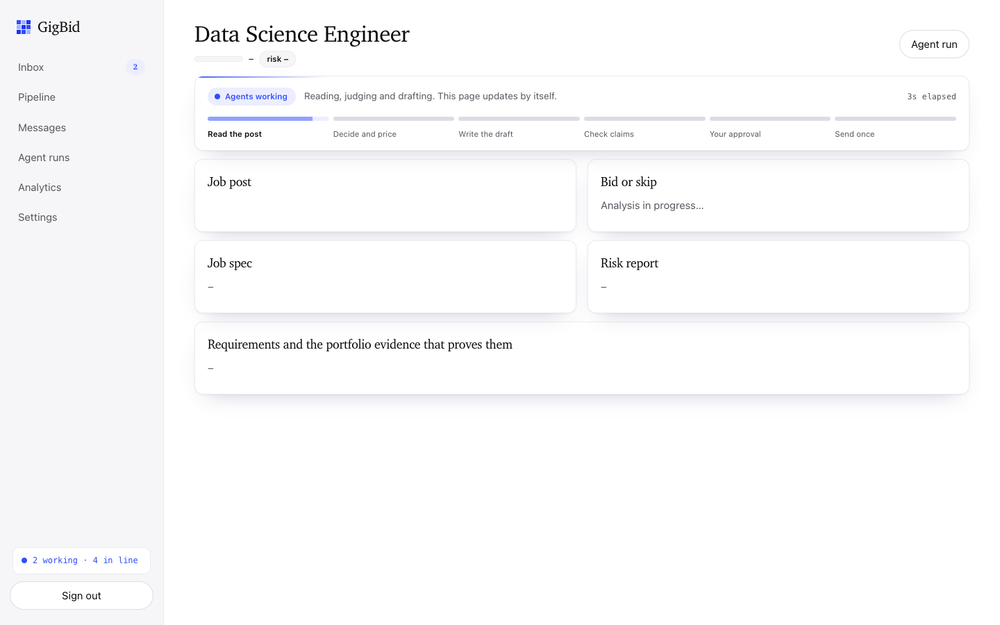
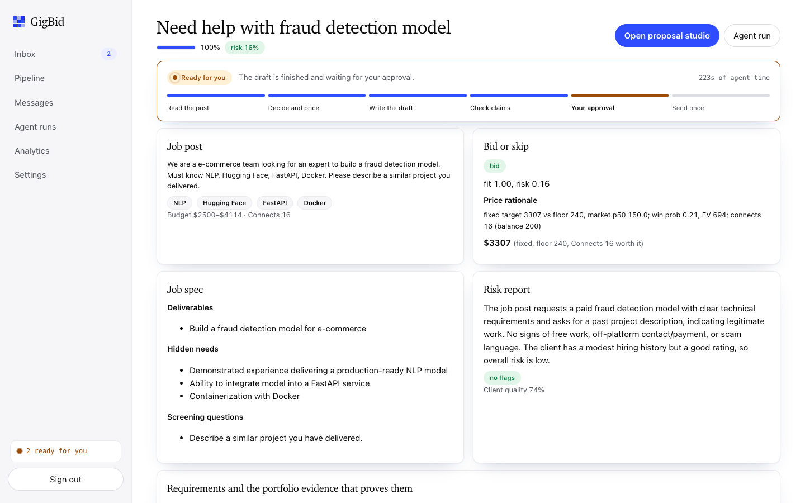
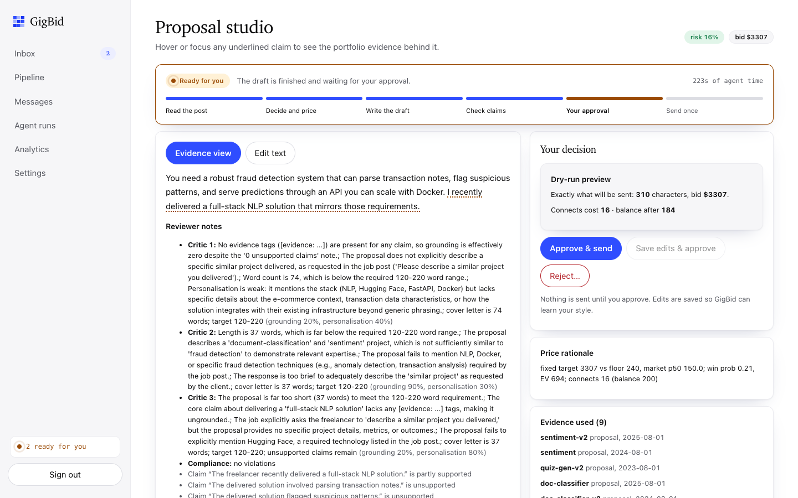
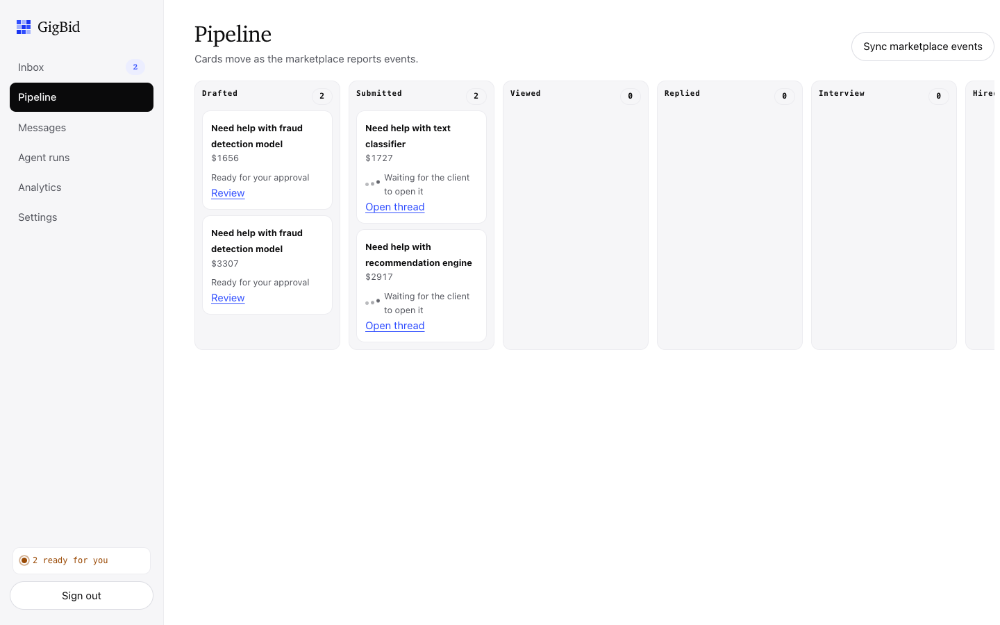
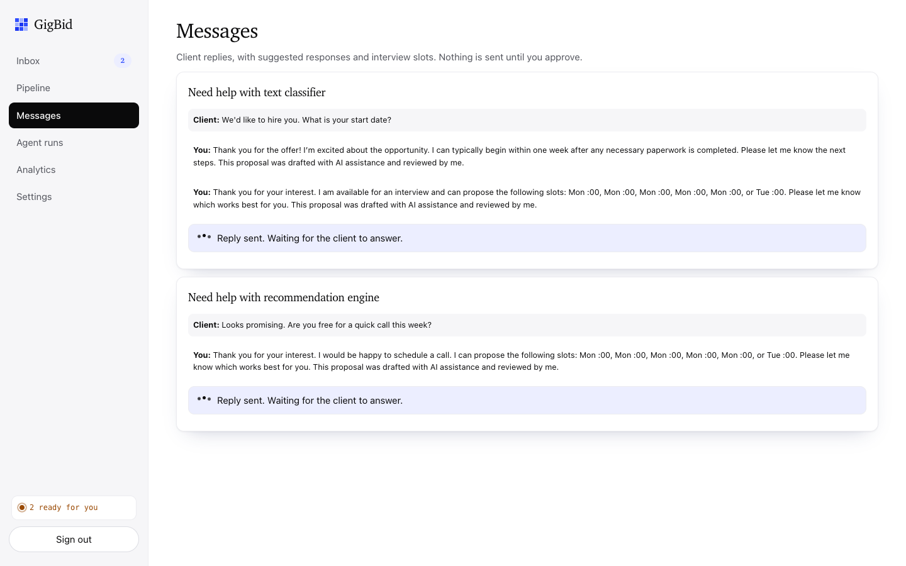
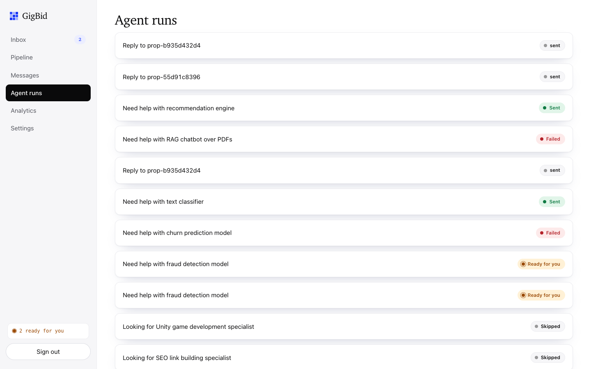
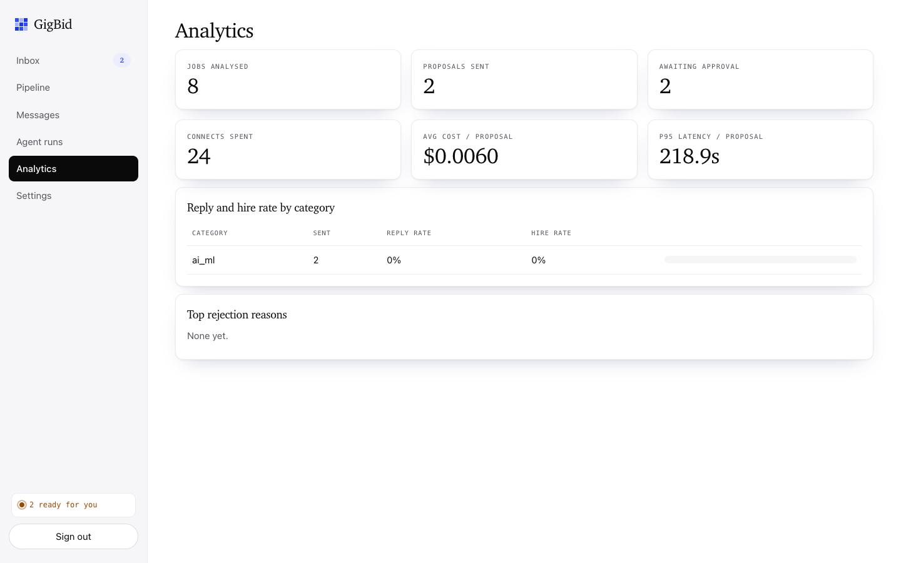
7. Results
Retrieval quality: mean reciprocal rank (higher is better)
60 jobs per persona, three personas. Hybrid search plus a reranker is best; the "advanced" decomposition made it worse.
Ablation: remove one part of the full pipeline
Removing decomposition alone restores the score. Removing BM25, reranking or the outcome boost changes almost nothing.
Claim verification
Proposals with an unsupported claim, 18 per arm: naive retrieval 50% before verification and 17% after. The shipped variant: 17% before and 0% after.
Reply rate
72% (naive) vs 78% (shipped), p = 0.70. Not significant. Better retrieval made the writing more honest, and there is no evidence yet that it made clients reply more.
Is multi-agent worth it? Decision accuracy on 10 jobs
Same local model for all three. The single agent's 0.60 is mostly formatting: 40% of its outputs were invalid JSON. On answers it produced it scored 1.0.
The judge versus my own labels
30 proposals, labelled by hand without seeing the judge's scores. Cohen's kappa 0.0.
Other findings
| Question | Result |
|---|---|
| Biggest decision error | 24 of 30 development failures were low-budget jobs the system bid on. A rule of about a dozen lines took bid-or-skip F1 from 0.89 to 0.98. |
| Tool granularity (Part A) | 37 fine tools cost about 3.4× the prompt tokens of 4 coarse tools. On the mid model, fine 0.975 and coarse 1.0 beat the tuned set at 0.825. On the small model the tuned set was best at 0.90. |
| Prompt injection | Attack success on job posts: 5.6% with no defence, 0% with the defence. After the Compliance Guard, 0% in every case. |
| Choosing models for the analysis nodes | The small, mid and strong models all scored F1 1.0 on the easy synthetic set, so the cheapest (small) is shipped. |
| Budgets, hosted models | Per proposal: about 20,400 tokens and $0.0056 at list price, within budget. Latency p95 222 s missed the 150 s budget, with only 3 proposals measured. |
| Crash drill | After a forced kill and restart: the approval was still pending, a second approve returned 409, and the marketplace recorded exactly one submission and one 16-Connect charge. |
8. What went wrong, and what it taught
- Decomposition hurt retrieval
- My favourite idea scored MRR 0.45 against 0.63 for the baseline. Cause: each requirement's search returns every project that mentions that skill, so projects matching one requirement strongly beat projects matching all of them. Kept in the results as a negative finding.
- Low-ball jobs
- The decision rule never compared the budget with the freelancer's rate floor. A boring rule fixed 24 failures. It came to light only because every failure was classified.
- The fix that opened a hole
- Scanning only outside injection-shaped sentences fixed six wrongly skipped jobs, but a scam whose only signal sits inside such a sentence is flagged and not skipped. The hole is documented.
- Quota, not skill
- Groq's free tier allows 200,000 tokens per day per model, about a dozen proposals. A first evaluation silently produced zero results because every call was rate-limited. Larger runs moved to a local model.
- The critic never approved
- The critic rejected every proposal, so each used all revision loops. A length rule was part of the cause and was fixed. Personalisation scores stayed near 0.4.
- The judge was useless
- It accepted 30 of 30 proposals while I accepted 12. Its scores carry no weight.
- Copied openings
- 17 of 30 proposals opened by repeating the client's own sentence. A new check now makes the critic reject that.
- Redesign bug
- While restyling, the mobile Menu button became visible on desktop because a new rule overrode the hiding rule. The browser tests caught it.
9. Where things stand
Done
- All code, 87 offline tests, 7 browser tests
- Evaluations, the 7-page report, docs
- Docker run and the crash drill
- Kaggle licences recorded
- GitHub history cleaned and pushed (repo still private)
- Your 30 judge labels scored
- UI redesign with live status
Still open
- A public URL. Hugging Face Docker Spaces are no longer free. Oracle Cloud Always Free fits but the account sign-up failed. The deploy script is ready.
- The 3-minute demo video (script:
docs/VIDEO_SCRIPT.md) - Publish the write-up and make the repo public
- The live Upwork adapter has only met a fake server
- GitHub Actions have never run on GitHub
10. Viva preparation
Ten drills from the brief. Each has a one-sentence answer, what to show, and the honest caveat. The full version is docs/VIVA.md.
1. Kill the marketplace server now. What does the user see?
Show. apps/web/src/components/Layout.tsx (banner), agent/mcp_client.py (retries, circuit breaker), worker/tasks.py (resume).
Honest. The browser test injects the outage at GigSim rather than killing the process; both end in the same exception.
2. Approve, then crash the worker. Prove it is submitted once.
Show. agent/graphs/bid_graph.py (submit), docs/evidence/docker_kill_resume_drill.md.
3. Delete the evidence behind a claim and regenerate.
Honest. There is no delete button; it is a data change plus a re-run. Verification is a model judgement, not a proof.
4. Open the trace of a job that was wrongly skipped. Which node was wrong?
Show. the run page (/runs/…) and decision.reason in agent/nodes/decision.py.
5. A job post contains an injected instruction. Show the defence and an attack that beats it.
An attack that wins. Obfuscated contact details, instructions split across messages, or evidence poisoning through an uploaded file.
6. What did style memory learn? Show the rule and delete an item.
Show. Settings, "What GigBid has learned"; agent/memory/promotion_rules.py.
7. Switch from GigSim to live mode. What changes?
Honest. The live adapter was tested against a fake Upwork server only.
8. Your judge and your labels disagreed. Show two.
Example. Item 12: a "fraud detection" proposal that cited a medical-document project and copied the post's first sentence. Judge 5/5/5, mine 1.
9. Where does the single-agent baseline beat the graph? Would you ship it?
10. How many lines absorbed the change request?
Honest. I wrote GigSim, so I knew the seams.
11. Glossary
- Agent
- A step in the workflow that reads input and produces a typed result, usually with a model.
- LangGraph
- A library for workflows as graphs, with saved state, parallel branches and pauses for a human.
- Checkpoint
- A saved snapshot of workflow state. Restarting resumes from it.
- Interrupt
- A deliberate pause in the graph until a person answers.
- MCP
- Model Context Protocol, a standard for tool servers an agent can call.
- Idempotency key
- A label on a write so that repeating it returns the first result instead of acting twice.
- Dry run
- A call that shows what would happen and what it costs without doing it.
- RAG
- Retrieval-augmented generation: find relevant text first, then write from it.
- BM25 / RRF
- BM25 is keyword scoring. Reciprocal rank fusion merges several ranked lists into one.
- Cross-encoder reranker
- A model that reads the query and a candidate together to re-score it, slower but sharper than embeddings.
- MRR, Recall@5
- Retrieval scores. Recall@5 asks whether the right item is in the top five. MRR rewards ranking it first.
- Ablation
- Removing one component at a time to see what it contributed.
- Cohen's kappa
- Agreement between two raters beyond chance. 0 means no better than chance.
- Prompt injection
- Text in untrusted data that tries to give the model orders.
- Connects
- The paid tokens a freelancer spends to submit a proposal on Upwork.
- SSE
- Server-sent events: the server pushes progress to the browser over one open connection.
- Open profile
- The configuration that uses only open-weight models, hosted or local.
12. Files and commands
| Folder | What is in it |
|---|---|
agent/ | Graphs, nodes, prompts, typed hand-offs, memory, config (config.yaml) |
rag/ | Ingestion, retrieval variants, claim verification |
mcp_servers/ | Portfolio, marketplace and workspace servers, adapters |
gigsim/ | The marketplace simulator (frozen) |
apps/api, apps/web, worker/ | Backend, React interface, background jobs |
evals/ | Runners and every results file |
docs/ | Architecture, data card, tools, runbook, decisions, report, viva, deploy guide |
infra/, scripts/ | Docker, Caddy, deploy and helper scripts |
Run it on your Mac
With Redis and your .env in place, scripts/dev.sh starts GigSim, the marketplace server, the API, the worker and the web app. Open http://localhost:3000, sign in, press Scout now, then open a job that reaches "Ready for you".
Check it
make test runs the offline tests. cd apps/web && npx playwright test runs the browser tests. python scripts/make_readme_tables.py refreshes the README tables from the results files.